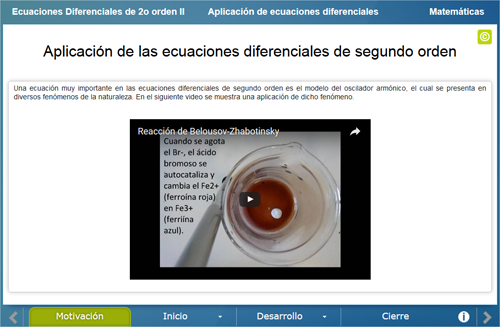
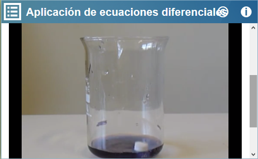
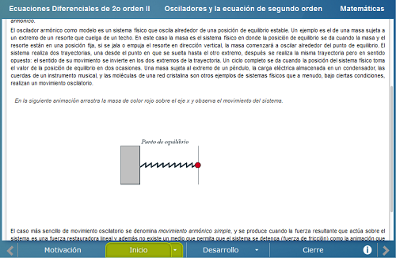
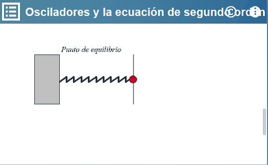
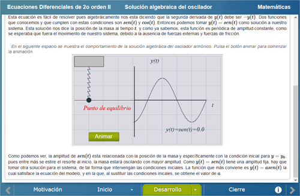
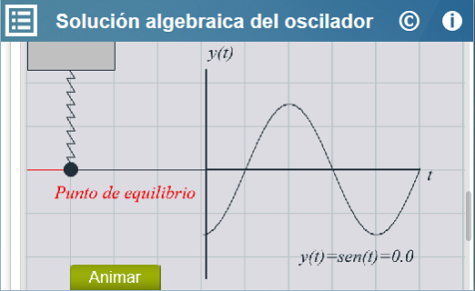
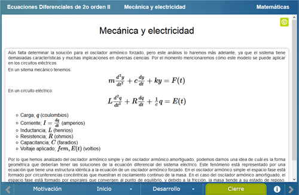
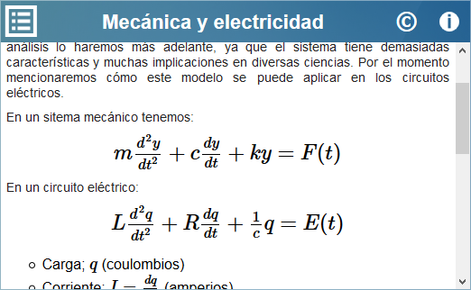

Ecuaciones Diferenciales de segundo orden II
Ecuaciones Diferenciales de segundo orden II
 Ecuaciones Diferenciales de segundo orden II
Ecuaciones Diferenciales de segundo orden II
Licenciatura: Matemáticas
Materia: Ecuaciones Diferenciales II
Unidad: 3 Estabilidad, El Oscilador Armónico.
Competencia específica: Aplicar las definiciones, propiedades, teoremas de sistemas de ecuaciones diferenciales para determinar la estabilidad en un sistema y el comportamiento del mismo.
En esta unidad se analiza el oscilador armónico junto con procedimientos matemáticos conocidos, se analiza este modelo por que tiene numerosas aplicaciones en muchas ramas de la ciencia como la Mecánica. la Electrónica y la Física, además por que las ideas matemáticas utilizadas para resolverlo son muy atractivas
El objetivo de la unidad es que el usuario conozca cómo aplicar las definiciones, propiedades y teoremas relativos a los sistemas de ecuaciones diferenciales para determinar la estabilidad en un sistema y el comportamiento del mismo a partir de un modelo específico, el oscilador armónico.
Se muestra un video en el cual se describe la reacción de Belousov-Zhabotinsky. Este fenómeno presenta oscilaciones naturales que pueden ser analizadas con ecuaciones diferenciales de segundo orden


Se muestra una animación de cómo es un oscilador armónico y se dan algunos ejemplos de fenómenos que presentan características de un oscilador. Posteriormente se analiza la ecuación diferencial de segundo orden que modela a un sistema de u oscilador armónico.


En este apartado se muestra cómo se puede resolver la ecuación del oscilador de forma algebráica y posteriormente numérica, de tal forma que se pueda identificar las características principales de dicho modelo.


Se da un ejemplo de cómo puede ser utilizada la ecuación del oscilador armónico en un circito eléctrico


| Diseño del contenido | Víctor Hugo García Jarillo (Facultad de Ciencias UNAM, LITE) |
| Diseño funcional | Víctor Hugo García Jarillo (Facultad de Ciencias UNAM, LITE) |
| Programación | Víctor Hugo García Jarillo (Facultad de Ciencias UNAM, LITE) |
| Diseño gráfico | Ricardo López Gómez |
| Coordinación | Leticia Montserrat Vargas Rocha |
| Diseño funcional | Victor Hugo García Jarillo (Facultad de Ciencias, UNAM) |
| Programación | Victor Hugo García Jarillo (Facultad de Ciencias, UNAM) |
| Diseño gráfico | Francisco Varela Fuentes |
| Coordinación | Leticia Montserrat Vargas Rocha |
| Desarrollo del contenedor | Oscar Escamilla González |
Los contenidos de esta unidad didáctica interactiva están bajo una licencia Creative Commons Reconocimiento-NoComercial-CompartirIgual.
La unidad didáctica fue creada con Arquímedes, una herramienta de código abierto.
La unidad didáctica contiene escenas elaboradas con Descartes, una herramienta de código abierto.
LITE - UnADM 2014